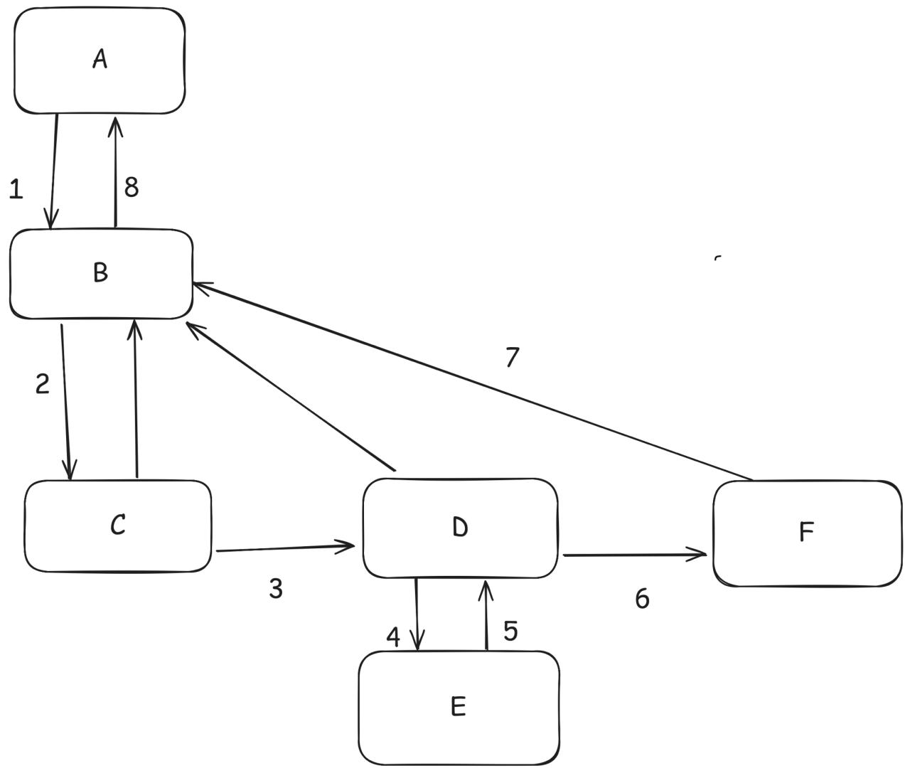

通俗易懂的React原理（二）：构建Fiber tree的流程
代码以React v19.1.0为例，https://github.com/facebook/react/tree/v19.1.0
今天开始我们开始研究React的源码。我们先关注构建Fiber tree相关的内容。
这篇要涉及到beginWork和completeWork的过程，我认为其他的教程此处讲的都比较简略，重点放在了两个方法的内部，而不是两个方法是怎么被调用的。大多数教程说，beginWork是“递”的过程，而“completeWork”是归的过程。然而二者并不是简单的先递后归，而是会交替进行。而我为了让大家能尽量抓住重点，从而快速对构建Fiber的流程有一个认知，可能不会遇到一个方法，就去详细讲它。希望我的这篇文章能对读者有所帮助
workLoopConcurrentByScheduler/workLoopConcurrent/workLoopSync
多的不说，我们直接从workLoopConcurrentByScheduler/workLoopConcurrent/workLoopSync开始看，这三个就是去循环遍历Fiber tree，构建Fiber节点的方法。至于哪里调用的它们，我们先不管，都讲到scheduler的时候再来看吧
1 | |
可以看到，三个方法其实区别不大，都是去循环执行performUnitOfWork(workInProgress)。workInProgress在我们讲的时候，可以指正在被构建的那棵Fiber tree。但是在源码里面，更多的时候，它特指workInProgress树上面当前正遍历到的那个节点。它是一个全局变量，如果这个节点遍历完了，那么就会把它赋值成刚才节点的child之类的。
workInProgress !== null其实就是判断当前这棵树有没有构建完毕，为null就表示构建完了，结束循环。
三个方法的区别就是，workLoopConcurrent和workLoopConcurrentByScheduler每次循环的时候，会判断一下当前是否到了预设的时间，到了就打断，等下一次再被调度，继续循环。就跟我们上一篇举例的那道面试题很像。这里workInProgress这个全局变量就记录了中断的时候，我们遍历到哪个节点。
workLoopConcurrentByScheduler里面的shouldYield，来自scheduler这个包，功能可以简单理解为经过了5ms就返回true。
至于workLoopConcurrent里面的noIdle，是React最近新加的代码。原本只有sync和concurrent（现在被改叫workLoopConcurrentByScheduler）两种逻辑的，即固定不打断和每5ms打断一次。
而React在尝试一种新逻辑，它觉得原来每次5ms打断一次太频繁了，于是在大部分场景下延长了时间，就是现在的workLoopConcurrent逻辑。大部分场景下，React会给自己留25ms的时间去循环。也就是注释里说的，浏览器的主线程有些工作太频繁了（例如动画），可能让React的执行在调度中被饿死，所以给自己多留点时间，大不了就让浏览器帧数低一点。而在没那么紧急的场景下，React将自己每次循环的时间上限缩短到5ms，让浏览器能渲染更多帧。
performUnitOfWork
从上面我们就更可以看出，performUnitOfWork是构建Fiber tree的核心了，循环去执行这个方法嘛。从名字上来看，他就是执行了一个工作单元。这么说起来还是比较抽象，我们看下它源码的主要部分
1 | |
我们对于源码抓大放小，从总体上把握流程，而不是拘泥于每个分支。因此我们主要看生产环境下会走到的代码，以及影响流程的部分。精简一下，代码变得更简单
1 | |
我们利用精简后的代码，结合上一篇中的图，去体会一下上一篇理论知识中Fiber tree遍历的过程
我们去梳理一下代码的意义。假设performUnitOfWork传入的Fiber node是A，然后beginWork会通过A和A.alternate（即current树中，A对应的节点），构建一个A的子节点（next）返回。对图中而言，next就是B。子节点是存在的，那么将workInProgress赋值为B，这一次循环结束，下一次循环会执行performUnitOfWork(B)
也就是会先执行图中的1和2。然后当performUnitOfWork(C)时，next是null了，因为C没有子节点了。这个时候，会执行completeUnitOfWork(C)
completeUnitOfWork
执行到这里，想知道发生了什么，就不得不去看completeUnitOfWork的代码了。下面是精简过后的代码
1 | |
我们看上述代码，是有一个循环的，也就是completedWork不为null之前一直执行。此处开始从自己往兄弟、父节点开始遍历。首先对自己执行了completeWork，然后拿到了自己的子节点。如果有子节点，那么将workInProgress赋值为自己的兄弟节点，然后结束当前循环。通常来讲，由于beginWork已经检查了是否有子节点，有的话不会进到complete的流程里面来。通常来讲，只有使用Suspense等特殊场景，才会进到这个分支里去。对于C来说，他没有子节点，不会进入这个循环。
然后取C的兄弟节点，取到了D，则会将workInProgress赋值为D，结束当前循环。等下一次循环的时候，执行performUnitWork(D)，流程和前面讲过的一样。
而如果当前节点没有兄弟节点了，例如E，则会将遍历的对象设为父节点，对父节点执行completeWork，重复这个循环。对于D,E这两个节点来说，顺序就是begin D->begin E->complete E->complete D。
最后，构建流程会回到Fiber的根节点，构建结束。
结合performUnitWork和completeUnitOfWork两个方法，用自然语言描述Fiber树的构建流程就是，有子节点就遍历子节点，没有子节点了去找右兄弟节点。兄弟节点也没有了，就回到父节点。
用伪代码来描述（略去complete里重复验证子节点的那一部分），省略函数实参中可计算出来的入参和不重要的入参，可以如下表述
1 | |
再回去结合那张图，我们其实可以明白，beginWork就是向下走的过程（图中1,2,4）。向下走到头了，会对自己执行completeWork，就会先向右（图中3,6）。向右也走到头了，就会向上走（图中5,7,8）
结语
这一篇，我们从整体上对React构建Fiber tree的流程有了大致的认知，但是我们其实并没有深入了解beginWork和completeWork具体干了什么。后面我们会再深入了解。